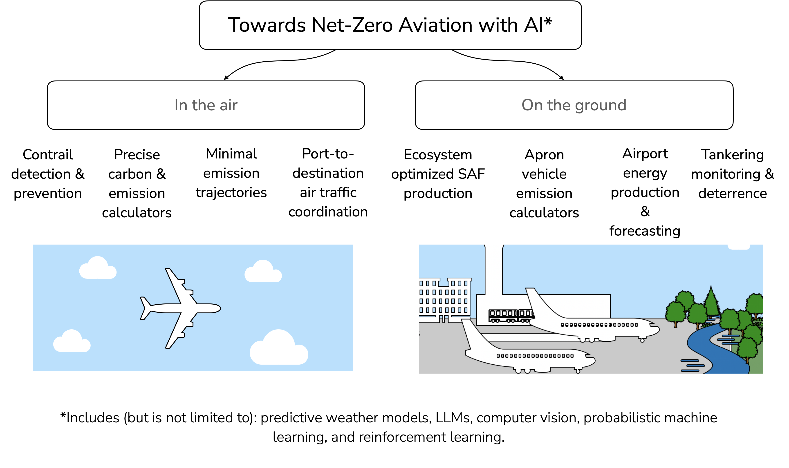

Scope
Successful AI efforts are underpinned on the availability and ability to mine insightful data. While large amounts of data exist – ranging from flight trajectories to airport traffic records, surveillance videos, satellite images, audio communications, and aircraft performance logs – extracting sustainability insights and forecasting outcomes remains challenging. As with all AI applications, prudence is critical when addressing matters of safety, security, and privacy.
This workshop will focus on three key areas:
Quantifying Impact: Identify avenues where AI can more rigorously quantify aviation’s climate impact (e.g., developing more precise carbon calculators).
Data Collaboration: Develop approaches for data sharing and sanitization that protect commercial interests while enabling open-source initiatives of benefit to all.
Actionable Pathways: Develop AI-driven implementation strategies, policies, and regulatory directions to reduce carbon and greenhouse gas emissions based on findings from areas 1 and 2.
To provide focus, the workshop will address sustainability initiatives related to civil airports and aircraft (both freight and passenger), examining both in-air and ground-based environmental impact.
Speakers & Participants
- Melinda Z. Pagliarello | Airports Council International - North America
- Benjamin Emerson | Georgia Tech
- Davis Lee | Georgia Tech
- Amir Roshan | Georgia Tech
- Elizabeth Qian | Georgia Tech
- Michael Balchanos | Georgia Tech
- Josiah Hester | Georgia Tech
- Tim Lieuwen | Georgia Tech
- Valerie Thomas | Georgia Tech
- Levi Boggs | Georgia Tech Research Institute
- Nicholas Bojdo | University of Manchester
- Dan Rotherham | University of Manchester
- Alex Covarrubias | Zensors
- Carly Shannon | Linx Strategies LLC
- Jen Wolchansky | Mead & Hunt
- Sangita Sharma | Delta Air Lines
- Asteris Apostolidis | KLM Royal Dutch Airlines
- Rajan Gupta | Centelli
- Kevin Staples | Salt Lake City Airport
- Douglas Rao | North Carolina Institute for Climate Studies
- Shashank Yellapantula | National Renewable Energy Laboratory
- Brian Kim | Pratt & Whitney
Registration
Currently, registration is limited to a small pool of academics, aviation industry and government employees. If you are interested in participating in this workshop, please do email Pranay Seshadri (prse@gatech.edu).
Location
1280 Prince Gilbert Library Bldg.,
Georgia Institute of Technology
Participants travelling from outside Atlanta are encouraged to consider the Georgia Tech Hotel & Conference Center for accomodation. It is a 12-15 minute walk from the Library.
Sponsors
- Georgia Institute of Technology
- United Kingdom Science & Innovation Network
Agenda (1.5 day workshop)
June 4th 2024
| Time | Activity | Speaker |
|---|---|---|
| 09:00 - 09:30 | Registration, coffee and pastries | |
| 09:30 - 10:00 | Introduction and an assessment of carbon emissions in aviation | P. Seshadri |
| 10:00 - 10:30 | Airport decarbonization landscape & existing challenges | J. Wolchansky & C. Shannon |
| 10:30 - 11:00 | Existing tools for carbon estimation & limitations | TBD |
| 11:00 - 11:30 | The Road to Netzero: Challenges, Strategies and Solutions | K. Staples |
| 11:30 - 12:00 | Digital engineering and AI-enabled solutions for sustainable infrastructure planning: The ATL aerotropolis | M. Balchanos |
| 12:00 - 12:30 | Foundation AI models for mission critical verticals in airports | A. Covarrubias |
| 12:30 - 13:30 | Lunch | |
| 13:30 - 14:00 | Sustainable fuels research at Georgia Tech | B. Emerson |
| 14:00 - 14:30 | Challenges in bringing sustainable fuels to airports | TBD |
| 14:30 - 15:30 | Coffee and breakout session I | |
| 15:30 - 16:00 | Using flight tracking data and atmospheric weather to estimate aviation emissions | N. Bodjo |
| 16:00 - 16:30 | Data-driven weather and climate application development | D. Rao |
| 16:30 - 18:30 | Break for the day | |
| 18:30 - 21:30 | Dinner |
Dinner venue
June 5th 2024
| Time | Activity | Speaker |
|---|---|---|
| 09:00 - 09:30 | Coffee and pastries | |
| 09:30 - 10:00 | Airline sustainability initatives via AI | A. Apostolidis |
| 10:00 - 10:30 | Delta’s Sustainability strategy | S. Sharma |
| 10:30 - 11:30 | Machine learning to reduce unwanted APU usage | TBD |
| 11:30 - 12:00 | Sustainability from an airline’s perspective | TBD |
| 12:00 - 12:30 | Breakout session II & next steps |